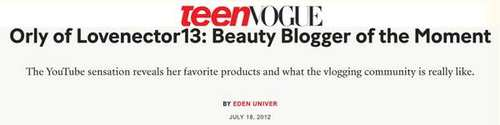
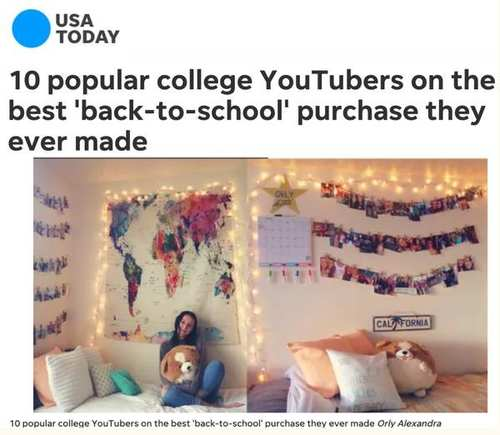

Featured Work
Digital Content Creator
Building a Digital Brand & Engaged Community (Before There Was a Playbook)
Content Creator, YouTube
Opportunity
Only a few years after YouTube was started, before content creation was a known career path and before brands had creator budgets, I saw an opportunity to build something meaningful, a genuine community around shared interests at a time when very few people were doing it.
My Approach
I approached YouTube with intention, consistency, and a focus on building community. I taught myself everything from video production to content strategy and audience development. I created a cross-platform content strategy and used analytics to understand what resonated. I built partnerships both proactively and reactively, pitching brands directly and fielding inbound opportunities.
Impact
Building my channel is where my love of digital storytelling began, and it continues to shape how I think about brand, audience, and community today.
Paid Brand Partnerships
National Media Coverage

"Orly of Lovenector13: Beauty Blogger of the Moment"
Brand Partnership — Clean & Clear
7-year partnership as part of the first class of brand ambassadors

"10 popular college YouTubers on the best back-to-school purchase they ever made"